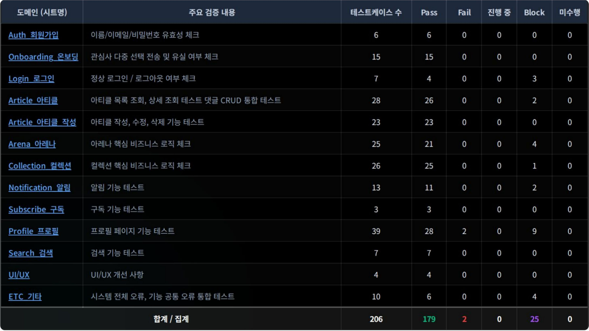
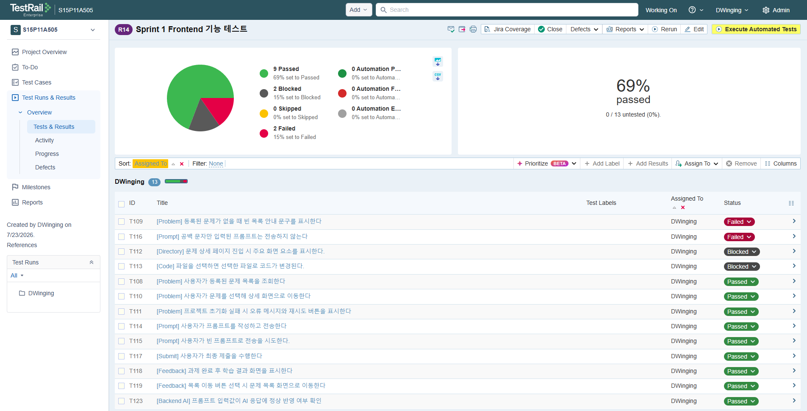
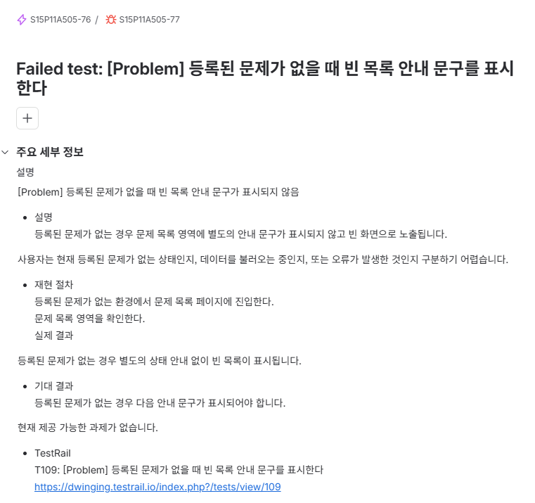

PORTFOLIO
최동욱 (QA Engineering)
기능을 검증하고 결함을 기록하는 QA 엔지니어
CONTENTS
PDF Download프로젝트 구현 과정과 문제 해결 경험을 중심으로 정리한 기술 포트폴리오입니다.
01. AI 기반 레벨별 테크 큐레이션 서비스 : 결(GYUL)
QA를 담당하여 테스트 설계부터 결함 공유·재검증까지 수행
| 프로젝트명 | 결(GYUL) | 개발 기간 | 2026.05.22 ~ 2026.06.25 |
| 개발 인원 | 3인 (FE 1 · BE 1 · QA 1) | 담당 역할 | QA |
| 핵심 결과 | 테스트 케이스 206건 전건 수행 · 유효 성공률 98.9% · 서울 7반 최우수상 | ||
프로젝트와 QA 범위
결(GYUL)은 하나의 기술 아티클을 사용자 수준(Lv1~Lv4)에 맞게 재구성하고, 학습 관리와 기술 토론 기능을 제공하는 AI 기반 테크 큐레이션 서비스입니다.
QA를 담당하여 회원가입, 로그인, 아티클, 컬렉션, 아레나, 구독, 알림, 프로필 등 13개 기능 도메인을 구분하고, 사용자 시나리오 기반의 정상·예외·경계값 테스트를 설계했습니다.
수행한 QA 업무
테스트 설계와 문서화
- 실제 사용자 흐름을 기준으로 기능별 테스트 범위 정의
- 테스트 케이스 206건 작성 및 전건 수행
- 입력값, 예상 결과, 실제 결과, 상태, 결함 로그를 Google Sheet에 기록
- 검증 결과를 날짜별로 누적해 이전 결과와 수정 이력 추적
결함 공유와 재검증
- 발견한 결함의 재현 조건과 실제 결과를 GitHub Issue로 공유
- 연결된 PR에서 변경 내용을 확인한 뒤 동일 시나리오 재수행
- 새로운 문제가 발생하면 검증 근거를 추가해 Issue Re-open
- 수정된 기능과 연결된 사용자 흐름의 사이드 이펙트 확인
협업 기반 결함 관리 흐름
대표 검증 사례와 QA 회고
비즈니스 로직 결함을 발견하고 수정 결과까지 재검증한 경험
대표 검증 사례
Arena 베팅 포인트 정산 오류
베팅 결과가 아닌 찬성·반대 참여 인원 비율에 따라 포인트가 분배되는 오류를 발견했습니다.
잘못된 계산 로직과 재현 조건을 GitHub Issue로 공유하고, 수정 후 동일 시나리오를 재수행해 정상 동작을 확인했습니다.
테스트 운영 결과

느낀 점과 한계
- 구체적인 기능 명세가 부족해 구현 결과를 기준으로 테스트를 설계하면서, 요구사항이 변경될 때마다 검증 기준도 함께 수정해야 했습니다.
- Google Sheet에 테스트 결과와 결함 로그를 누적했지만, 전체 진행 상황과 테스트 케이스별 결함 상태를 한눈에 추적하기 어려운 한계가 있었습니다.
- 로그인·회원가입 시나리오를 Playwright로 자동화했지만 기능 변경에 따라 테스트 코드 수정이 반복되어, 자동화 전에 안정된 검증 기준과 반복 가치가 있는 범위를 선정해야 한다는 점을 배웠습니다.
참고 자료
02. 프롬프트 작성 실력 향상 프로그램
기능 명세를 바탕으로 테스트를 설계하고 검증 결과와 결함 이력을 관리
| 프로젝트명 | 프롬프트 실력 향상 프로그램 | 개발 기간 | 2026.07.07 ~ 2026.08.10 |
| 개발 인원 | 6인 (FE · BE · AI · Infra · PM · QA) | 담당 역할 | QA |
프로젝트 소개
코드베이스와 기능 명세가 주어지면 사용자가 프롬프트를 입력해 코드를 수정하고, 입력한 프롬프트와 제출 결과에 대한 LLM 피드백을 확인하는 프롬프트 평가·학습 프로그램입니다.
QA 프로세스 구축 및 운영
명세 기반 테스트 설계
- 프로토타입 검증 전 기능 명세와 사용자 흐름 검토
- 화면 기능과 백엔드 API를 기준으로 테스트 범위 구분
- TestRail에서 실행 결과와 검증 상태 관리
결함 기록과 개발 협업
- 실제 결과와 기대 결과의 차이를 근거 중심으로 기록
- 중요 결함은 개발자에게 즉시 공유하고 원인 범위 확인
- 기능 수정이 필요한 항목은 정리 후 팀원들과 회의 진행
QA 산출물

TestRail 테스트 관리
기능별 테스트 케이스와 Pass·Fail·Block 실행 상태를 기록함.

결함 및 변경 요청 기록
재현 조건, 실제 결과, 변경 요청 사항을 정리함.
현재 상태
- 1차 프로토타입 테스트 케이스 13건 수행 완료
- 문제 샘플 데이터가 준비되지 않은 기능 2건은 Block 상태로 기록
- 반복 프롬프트와 다중 파일 관리가 포함된 2차 프로토타입 구축 중
03. 알고리즘 문제 해결 기반의 코드 최적화 경험
문제 해결을 넘어, 실행 성능과 시스템 동작 원리를 분석하는 엔지니어링 접근
| 기간 | 2023.04 ~ 현재 | 사용 언어 | Java(주력), Python, Kotlin, C++ |
| 플랫폼 | Baekjoon · Programmers · SWEA · LeetCode | 핵심 성과 | PCCP Java Lv4 · 삼성 B형 · Baekjoon Platinum II |
역량 기술 개요
- 단순히 알고리즘 문제를 해결하는 데 그치지 않고, 실행 성능과 시스템 동작 원리를 분석·검증하는 엔지니어링 접근 방식을 지향합니다.
- 대규모 반복 연산 환경에서 조건 분기 구조, 자료구조 접근 방식, 객체 생성 비용 등 런타임에 영향을 주는 요소를 분석합니다.
- 가설 수립 → 코드 개선 → 성능 검증 → 기술 자산화의 과정을 반복하며 문제 해결 역량을 발전시키고 있습니다.
공학적 접근 방식
- 근거 중심의 문제 해결을 위해 성능 병목 원인을 분석하고 가설을 수립한 뒤 실험을 통해 검증합니다.
- 실행 흐름과 자료구조의 동작 원리를 고려하여 불필요한 연산과 메모리 사용을 최소화합니다.
- 성능과 가독성의 균형을 고려하여 Hotspot 구간에만 선택적으로 최적화를 적용합니다.
- GitHub, log.md, summary.md, Velog를 활용하여 분석 과정과 개선 결과를 지속적으로 문서화합니다.
핵심 성과
BOJ 1854번 K번째 최단 경로 문제에서 조건 분기 구조와 PriorityQueue 접근 방식을 재설계하여 실행 시간과 메모리 사용량을 개선했습니다.
| 항목 | 개선 전 | 개선 후 | 개선 효과 |
|---|---|---|---|
| 실행 시간 | 1132ms | 596ms | 약 47% 단축 |
| 메모리 | 63MB | 40MB | 약 35% 절감 |
- PriorityQueue 연산 최소화 및 조건 분기 구조 재설계
- 동일 환경 반복 제출을 통한 성능 개선 검증
- 개선 원인과 분석 결과를 기술 블로그로 문서화